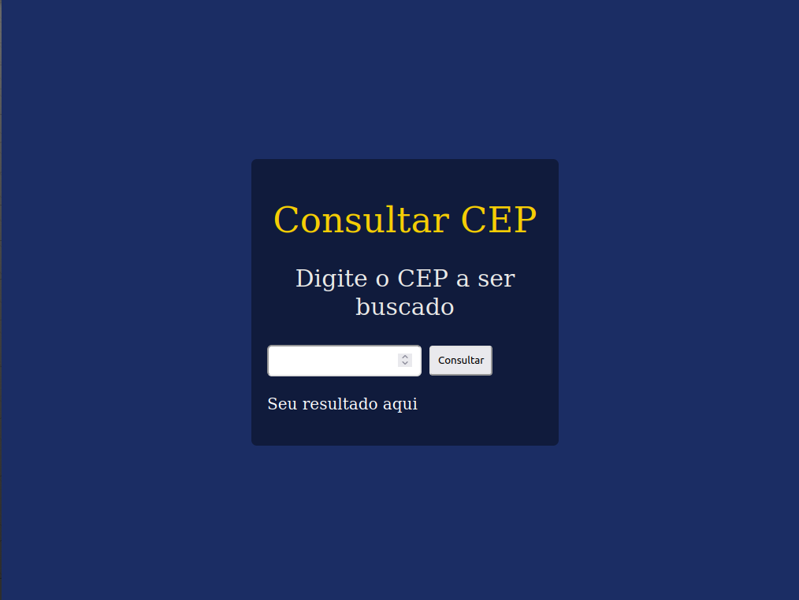
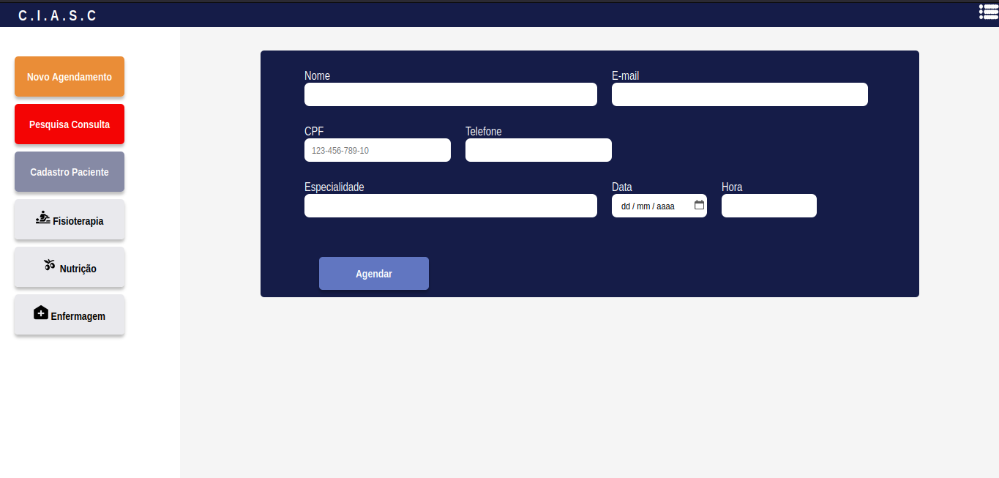
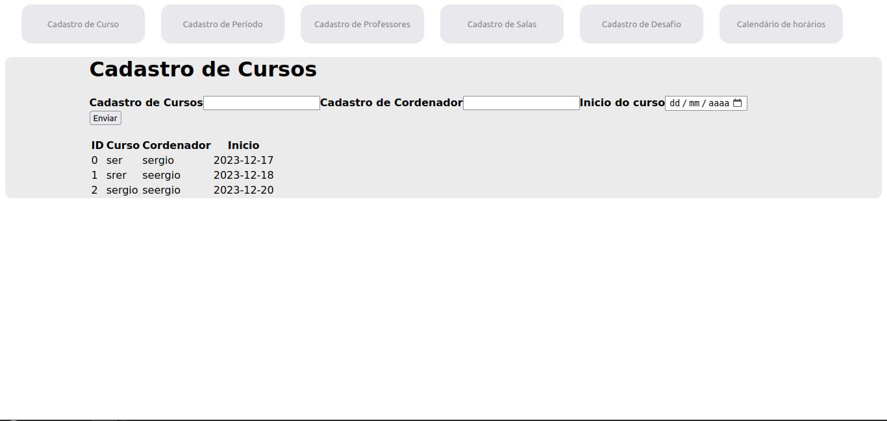
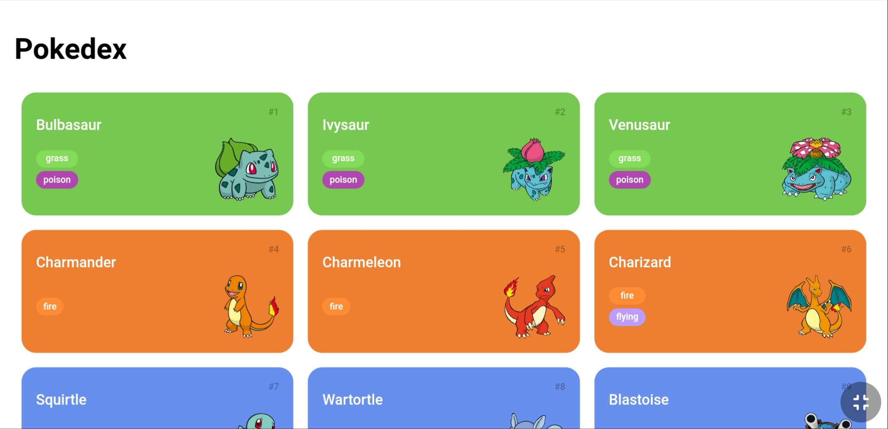
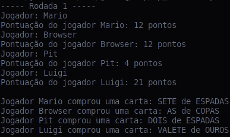

-
pesagem de correio
Esse projeto visa fazer um cálculo de envio de encomendas apartir do peso da encomenda e para onde deseja enviar. Esse projeto faz uso da api pública viacep
-
ciasc
A aplicação de agendamendo médico especializado para o CIASC tem o objetivo de inovar a forma de fazer agendamendo que anteriormente era por meio de papelada
-
ensalamento
Esse projeto serve para simular uma aplicação de matricula de professores, alunos salas, cursos e mais, ele tem o bjeto de treinamento de CRUD e desenvolimento com Reac.js
-
pockedex
Essa aplicação foi feita por um treinamento do gratuito no youtube que visa obter conhecimento prático de consumo de api. A aplicação faz uso de uma api pública
-
bisca
Esse projeto foi usada como forma de avaliação para desenvolvimento de aplicações java, POO e desenvolimento de testes.